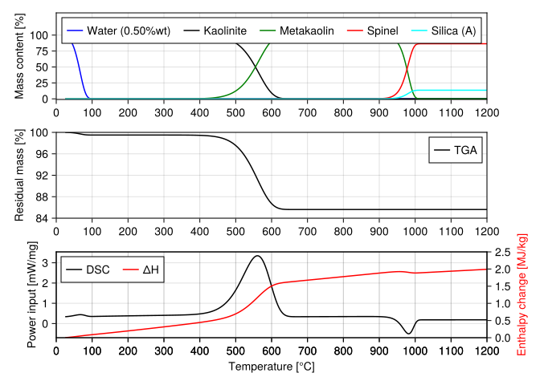
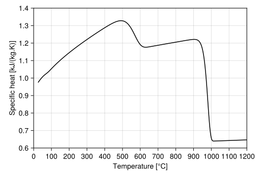

using Pkg
open("pkg_init.log", "w") do log
Pkg.activate(joinpath(@__DIR__, "julia-shared"); io=log)
end
push!(LOAD_PATH, joinpath(@__DIR__, "scripts"))
using AuChimiste
using CairoMakie
using DifferentialEquations
using Latexify
using LinearAlgebra
using ModelingToolkit
using NumericalIntegration
using Printf
using Symbolics: scalarize
using SciCompDSLThermal analysis simulation
In this note we investigate the right implementation to reproduce the kinetics of kaolinite calcination reported by Eskelinen et al. (2015). Neither their model nor their references properly provide the concentration units used in the rate laws, so that becomes an issue when trying to reproduce the results. Here we derive the equations for a complete mass and energy balance to simulate a coupled DSC/TGA analysis of the material in with different concentration units in the rate laws.
Species properties
In what follows the condensate species will be indexed as the next list, so for simplifying notation species will be referred to solely by their index.
- Liquid water
- Kaolinite \(Al_2Si_2O_5(OH)_4\)
- Metakaolin \(Al_2Si_2O_7\)
- Spinel \(Al_4Si_3O_{12}\)
- Amorphous silica \(SiO_2\)
Final conversion of spinel into mullite and cristobalite is neglected here.
Polynomials for specific heat are those of Schieltz and Soliman Schieltz1964, except for spinel phase for which at the time of the publication was unknown. A rough estimate of its value is provided by Eskelinen et al. Eskelinen2015. Since this phase is the least relevant in the present study and the order of magnitude seems correct, it is employed in the simulations.
Below we start by loading the database and displaying the species table:
# Use built-in database:
tdb = AuChimisteDatabase(; selected_species = [
"WATER_L",
"KAOLINITE",
"METAKAOLIN",
"SIO2_GLASS",
"SPINEL",
])
AuChimiste.speciestable(tdb)5×4 DataFrame
| Row | names | display | source | state |
|---|---|---|---|---|
| String | String | String | String | |
| 1 | KAOLINITE | Kaolinite | SCHIELTZ1964 | solid |
| 2 | METAKAOLIN | Metakaolin | SCHIELTZ1964 | solid |
| 3 | SIO2_GLASS | SiO2 (glass) | SCHIELTZ1964 | solid |
| 4 | SPINEL | Spinel | HYPOTHETICAL | solid |
| 5 | WATER_L | Water (liquid) | SCHIELTZ1964 | liquid |
Because the mechanism assumes a given species indexing, we enforce it below:
# Materials for considered phases as indexed:
const materials = [
tdb.species.WATER_L
tdb.species.KAOLINITE
tdb.species.METAKAOLIN
tdb.species.SPINEL
tdb.species.SIO2_GLASS
]
# Molecular masses of considered phases [kg/mol]:
const W = map(AuChimiste.molar_mass, materials);Computing mixture properties (specific heat) makes use of this indexing too:
"Mass weighted mixture specific heat [J/(kg.K)]"
function mixturespecificheat(T, Y)
# Retrieve specific heat for all species as stated above:
# specificheat(T) = map(m->AuChimiste.specific_heat(m, T), materials)
# scalarize(Y' * specificheat(T))
cp(m, y) = y * AuChimiste.specific_heat(m, T)
sum(cp(m, y) for (m, y) in zip(materials, Y))
end;Global mechanism
Here we provide the mechanism discussed by #Eskelinen2015. Individual reaction steps are better described by Holm Holm (2001), especially beyond our scope at high temperatures.
\[ \begin{aligned} H_2O_{(l)} &\rightarrow H_2O_{(g)} & \Delta{}H>0\\ Al_2Si_2O_5(OH)_4 &\rightarrow Al_2Si_2O_7 + 2H_2O_{(g)} & \Delta{}H>0\\ 2Al_2Si_2O_7 &\rightarrow Al_4Si_3O_{12} + {SiO_2}_{(a)} & \Delta{}H<0 \end{aligned} \] Be \(r_{i}\) the rate of the above reactions in molar units, i.e. \(mol\cdotp{}s^{-1}\), then the rate of production of each of the considered species in solid state is given as:
\[ \begin{pmatrix} \dot{\omega}_1\\ \dot{\omega}_2\\ \dot{\omega}_3\\ \dot{\omega}_4\\ \dot{\omega}_5\\ \end{pmatrix} = \begin{pmatrix} -1 & 0 & 0\\ 0 & -1 & 0\\ 0 & 1 & -2\\ 0 & 0 & 1\\ 0 & 0 & 1\\ \end{pmatrix} \begin{pmatrix} r_1\\ r_2\\ r_3\\ \end{pmatrix} \]
In matrix notation one can write \(\dot{\omega}=\nu\cdotp{}r\), as it will be implemented. By multiplying each element of the resulting array by its molecular mass we get the net production rates in mass units. Constant \(\nu\) provides the required coefficients matrix.
Mass loss through evaporation and dehydroxylation is handled separately because it becomes simpler to evaluate the condensate phases specific heat in a later stage. The first two reactions release water to the gas phase, so \(\eta\) below provides the stoichiometry for this processes.
Sample mass loss is then simply \(\dot{m}=\eta\cdotp{}rM_1\), where \(M_1\) is water molecular mass so that the expression is given in \(kg\cdotp{}s^{-1}\).
# Solid state stoichiometric coefficients
const ν = [
-1 0 0;
0 -1 0;
0 1 -2;
0 0 1;
0 0 1
]
# Gas phase stoichiometric coefficients
const η = [1 2 0];"Species net production rate [kg/s]"
netproductionrates(r) = diagm(W) * (ν * r);"Sample mass loss rate [kg/s]"
masslossrate(r) = -1 * sum(η[i] * r[i] for i in 1:3) * W[1];
# -1 * (η * r) * W[1]Balance equations
The modeled system - the solid material - is open in the sense it looses water to the environment. Thus, it is necessary to add this contribution to the balance equations so that evaluated mass fractions remain right. From the definitions below
\[ \frac{dm}{dt} = \dot{m}\qquad \frac{dm_k}{dt} = \dot{\omega}\qquad Y_k = \frac{m_k}{m} \]
and using the quotient rule of differentiation we can write
\[ \frac{dY_k}{dt}=\frac{m\dot{\omega}-\dot{m}m_k}{m^2} \]
that can be simplified to
\[ \frac{dY_k}{dt}=\frac{1}{m}\left(\dot{\omega}-\dot{m}Y_k\right) \]
which is the form we will implement here. Notice that the computation of \(\dot{m}\) is already provided by masslossrate and \(\dot{\omega}\) by netproductionrates so we can use the results of those evaluations in the following balance equation:
"Compute balance equation for species with varying system mass."
speciesbalance(ṁ, ω̇, m, Y) = (1 / m) * (ω̇ - Y .* ṁ);Reaction kinetics
Eskelinen et al. (2015) compile a set of pre-exponential factors and activation energies for Arrhenius rate constants for the above reactions, which are provided in A and Eₐ below. Their reported reaction enthalpies are given in \(ΔH\).
For such a global approach we do not have the privilege of working with actual concentrations because the mass distribution in the system is unknown and it would be meaningless to work with specific masses. Thus, assume the reaction rates are proportional to the number of moles of the reacting species \(n_r\) so we get the required units as exposed above. Then the \(r_i\) can be expressed as
\[ \begin{aligned} r_{i} &= k_i(T)n_r \\[12pt] &= k_i(T)\frac{m_r}{M_r} \\[12pt] &= k_i(T)\frac{Y_r}{M_r}m \end{aligned} \]
"Rate constant pre-exponential factor [1/s]."
const A = [5.0000e+07; 1.0000e+07; 5.0000e+33];
"Reaction rate activtation energies [J/(mol.K)]."
const E = [6.1000e+04; 1.4500e+05; 8.5600e+05];
"Reaction enthalpies per unit mass of reactant [J/kg]."
const ΔH = [2.2582e+06; 8.9100e+05; -2.1290e+05];"Evaluate rate constants [1/s]."
rateconstants(T) = A .* exp.(-E ./ (AuChimiste.GAS_CONSTANT * T));"Compute reaction rates [mol/s]."
reactionrates(m, T, Y) = m * rateconstants(T) .* Y[1:3] ./ W[1:3];"Total heat release rate for reactions [J/kg]."
# heatrelease(r) = (r .* W[1:3])' * ΔH;
heatrelease(r) = sum(r[i] * W[i] * ΔH[i] for i in 1:3);Experimental controls
To wrap-up we provide the programmed thermal cycle and the computation of required heat input to produce a perfect heating curve. It must be emphasized that actual DSC machines use some sort of controllers to reach this, what introduces one source of stochastic behavior to the measurement.
"Thermal cycle to apply to sample."
temperature(t, θ̇; T₀ = 298.15) = T₀ + θ̇ * t
"Required heat input rate to maintain heating rate `θ̇`."
heatinput(m, c, θ̇, ḣ) = m * c * θ̇ + ḣ;Model statement
Below we put together everything that has been developed above.
There are a few different types of quantities here:
- Independent variables, here only $\(t\)
- Dependent variables, \(m\) and \(Y\)
- Observable derivatives \(ṁ\) and \(Ẏ\)
- Other observables (partial calculations)
Because of how a DSC analysis is conducted, it was chosen that the only model parameter should be the heating rate \(θ̇\). Furthermore, all other quantities were encoded in the developed functions.
Below we present the domain-specific language implementation of the model:
@independent_variables t
D = Differential(t)
@mtkmodel ThermalAnalysis begin
@variables begin
m(t)
ṁ(t)
Y(t)[1:5]
Ẏ(t)[1:5]
r(t)[1:3]
ω̇(t)[1:5]
T(t)
c(t)
ḣ(t)
q̇(t)
end
@parameters begin
θ̇
end
@equations begin
D(m) ~ ṁ
scalarize(D.(Y) .~ Ẏ)...
scalarize(Ẏ .~ speciesbalance(ṁ, ω̇, m, Y))...
scalarize(r .~ reactionrates(m, T, Y))...
scalarize(ω̇ .~ netproductionrates(r))...
ṁ ~ masslossrate(r)
T ~ temperature(t, θ̇)
c ~ mixturespecificheat(T, Y)
ḣ ~ heatrelease(r)
q̇ ~ heatinput(m, c, θ̇, ḣ)
end
end;Alternatively, it could also be created in a functional form as:
"Model creation routine."
function thermal_analysis(; name)
@independent_variables t
D = Differential(t)
state = @variables(begin
m(t)
ṁ(t)
Y(t)[1:5]
Ẏ(t)[1:5]
r(t)[1:3]
ω̇(t)[1:5]
T(t)
c(t)
ḣ(t)
q̇(t)
end)
param = @parameters(begin
θ̇
end)
eqs = [
D(m) ~ ṁ
scalarize(D.(Y) .~ Ẏ)
scalarize(Ẏ .~ speciesbalance(ṁ, ω̇, m, Y))
scalarize(r .~ reactionrates(m, T, Y))
scalarize(ω̇ .~ netproductionrates(r))
ṁ ~ masslossrate(r)
T ~ temperature(t, θ̇)
c ~ mixturespecificheat(T, Y)
ḣ ~ heatrelease(r)
q̇ ~ heatinput(m, c, θ̇, ḣ)
]
return ODESystem(eqs, t, state, param; name)
end;Below we instantiate the model. We observe the expanded form with all variables and observables (remove the semi-colon to see):
# @named analysis = ThermalAnalysis();
@named analysis = thermal_analysis();For solution is is necessary to simplify this system to the equations that really are integrated. Using structural_simplify we reach this goal.
model = structural_simplify(analysis);Now we can get the actual equations:
equations(model)\[ \begin{align} \frac{\mathrm{d} ~ m\left( t \right)}{\mathrm{d}t} &= \dot{m}\left( t \right) \\ \frac{\mathrm{d} ~ Y\_{5}\left( t \right)}{\mathrm{d}t} &= \dot{Y}\_{5}\left( t \right) \\ \frac{\mathrm{d} ~ Y\_{4}\left( t \right)}{\mathrm{d}t} &= \dot{Y}\_{4}\left( t \right) \\ \frac{\mathrm{d} ~ Y\_{3}\left( t \right)}{\mathrm{d}t} &= \dot{Y}\_{3}\left( t \right) \\ \frac{\mathrm{d} ~ Y\_{2}\left( t \right)}{\mathrm{d}t} &= \dot{Y}\_{2}\left( t \right) \\ \frac{\mathrm{d} ~ Y\_{1}\left( t \right)}{\mathrm{d}t} &= \dot{Y}\_{1}\left( t \right) \end{align} \]
unknowns(model)6-element Vector{SymbolicUtils.BasicSymbolicImpl.var"typeof(BasicSymbolicImpl)"{SymReal}}:
m(t)
(Y(t))[5]
(Y(t))[4]
(Y(t))[3]
(Y(t))[2]
(Y(t))[1]
… and the observed quantities (uncomment to inspect).
# observed(model)Solution utilities
To make problem solution and visualization simple we provide the following utilities.
"""
plotmodel(model, sol)
Standardized plotting of DSC/TGA analyses simulation.
"""
function plotmodel(model, sol)
tk = sol[:t]
Tk = sol[model.T] .- 273.15
mk = sol[model.m]
Y1 = sol[model.Y[1]]
Y2 = sol[model.Y[2]] * 100
Y3 = sol[model.Y[3]] * 100
Y4 = sol[model.Y[4]] * 100
Y5 = sol[model.Y[5]] * 100
q = sol[model.q̇]
Y1max = maximum(Y1)
y1 = 100Y1 / Y1max
label_water = "Water ($(@sprintf("%.2f", 100Y1max))%wt)"
DSC = 1.0e-03 * (q ./ mk[1])
TGA = 100mk ./ maximum(mk)
δH = 1e-06cumul_integrate(tk, 1000DSC)
f = Figure(size = (500, 500))
ax1 = Axis(f[1, 1])
ax2 = Axis(f[2, 1])
ax3 = Axis(f[3, 1])
ax4 = Axis(f[3, 1])
lines!(ax1, Tk, y1; color = :blue, label = label_water)
lines!(ax1, Tk, Y2; color = :black, label = "Kaolinite")
lines!(ax1, Tk, Y3; color = :green, label = "Metakaolin")
lines!(ax1, Tk, Y4; color = :red, label = "Spinel")
lines!(ax1, Tk, Y5; color = :cyan, label = "Silica (A)")
lines!(ax2, Tk, TGA; color = :black, label = "TGA")
l3 = lines!(ax3, Tk, DSC; color = :black)
l4 = lines!(ax4, Tk, δH; color = :red)
axislegend(ax1; position = :ct, orientation = :horizontal)
axislegend(ax2; position = :rt, orientation = :horizontal)
axislegend(ax3, [l3, l4], ["DSC", "ΔH"], position = :lt,
orientation = :horizontal)
ax1.ylabel = "Mass content [%]"
ax2.ylabel = "Residual mass [%]"
ax3.ylabel = "Power input [mW/mg]"
ax4.ylabel = "Enthalpy change [MJ/kg]"
ax4.xlabel = "Temperature [°C]"
xticks = 0:100:1200
ax1.xticks = xticks
ax2.xticks = xticks
ax3.xticks = xticks
ax4.xticks = xticks
ax1.yticks = 0:25:100
ax2.yticks = 80:4:100
ax4.yticks = 0:0.5:2.5
xlims!(ax1, (0, 1200))
xlims!(ax2, (0, 1200))
xlims!(ax3, (0, 1200))
xlims!(ax4, (0, 1200))
ylims!(ax1, (-1, 135))
ylims!(ax2, (84, 100))
ylims!(ax4, (0, 2.5))
ax4.ygridcolor = :transparent
ax4.yaxisposition = :right
ax4.ylabelcolor = :red
return f
end;"""
solvemodel(model, τ, Θ̇, m₀, Y₀)
Standard interface for solving the `ThermalAnalysis` model.
"""
function solvemodel(model, τ, Θ̇, m, Y, solver = nothing, kwargs...)
defaults = (abstol = 1.0e-12, reltol = 1.0e-08, dtmax = 0.001τ)
options = merge(defaults, kwargs)
u0 = [model.m => m, model.Y => Y, model.θ̇ => Θ̇]
prob = ODEProblem(model, u0, (0.0, τ))
solve(prob, solver; options...)
end;Sensitivity study
Now it is time to play and perform a numerical experiment.
This will insights about the effects of some parameters over the expected results.
Use the variables below to select the value of:
θ̇user = 20.0
huser = 0.5;sol, fig = let
@info "Computation running here..."
# Analysis heating rate.
Θ̇ = θ̇user / 60.0
# Kaolin humidity level.
h = huser / 100.0
# Initial mass (same as Meinhold, 2001).
m = 16.0e-06
# Integration interval to simulate problem.
τ = 1175.0 / Θ̇
# Assembly array of initial states.
Y = [h, 1.0-h, 0.0, 0.0, 0.0]
# Call model solution routine.
sol = solvemodel(model, τ, Θ̇, m, Y)
# ... and plot results.
fig = plotmodel(model, sol)
sol, fig
end
fig[ Info: Computation running here... ┌ Warning: Found `resolution` in the theme when creating a `Scene`. The `resolution` keyword for `Scene`s and `Figure`s has been deprecated. Use `Figure(; size = ...` or `Scene(; size = ...)` instead, which better reflects that this is a unitless size and not a pixel resolution. The key could also come from `set_theme!` calls or related theming functions. └ @ Makie C:\Working\kompanion\.julia\packages\Makie\Vn16E\src\scenes.jl:264

An advantage of using observables in the model is the post-processing capactities it offers. All observables are stored in memory together with problem solution. If expected solution is too large, it is important to really think about what should be included as an observable for memory reasons.
Below we illustrate the mixture specific heat extracted from the observables.
with_theme() do
T = sol[model.T] .- 273.15
c = sol[model.c] ./ 1000
f = Figure(size = (500, 350))
ax = Axis(f[1, 1])
lines!(ax, T, c; color = :black)
ax.ylabel = "Specific heat [kJ/(kg.K)]"
ax.xlabel = "Temperature [°C]"
ax.xticks = 0:100:1200
ax.yticks = 0.6:0.1:1.4
xlims!(ax, (0, 1200))
ylims!(ax, (0.6, 1.4))
f
end
Hope these notes provided you insights on DSC/TGA methods!
References
Eskelinen, Aleksi, Alexey Zakharov, Sirkka‐Liisa Jämsä‐Jounela, and Jonathan Hearle. 2015. “Dynamic Modeling of a Multiple Hearth Furnace for Kaolin Calcination.” AIChE Journal 61 (11): 3683–98. https://doi.org/10.1002/aic.14903.
Holm, Jan L. 2001. “Kaolinites–Mullite Transformation in Different Al2O3–SiO2 Systems: Thermo-Analytical Studies.” Physical Chemistry Chemical Physics 3 (7): 1362–65. https://doi.org/10.1039/B010031P.